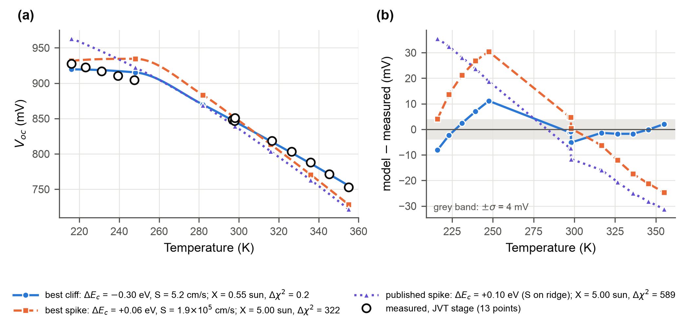
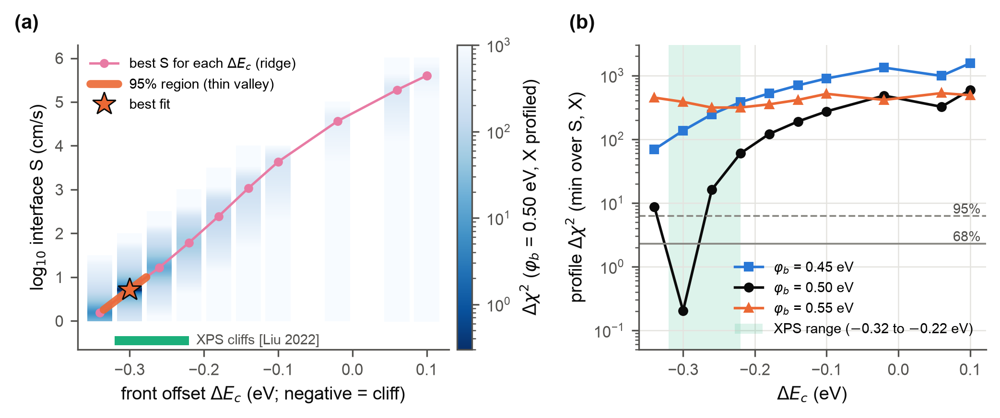
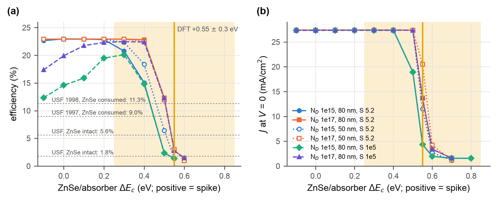

profile Δχ² of the ten simulated offsets (log scale); dashed: 95 %. ident_profile.csv
SCAPS-1D · NIST Sesame · Quantum ESPRESSO
A passivated cliff, not a spike.
Calibrated, cross-validated device modelling of the 21.4 % ZnO/CdSeTe/CdTe solar cell. Its temperature-dependent Voc excludes the +0.10 eV spike of the published model and requires a passivated cliff at the ZnO front. Scroll: the stack becomes its band diagram, then the front offset moves.
A passivated cliff, not a spikeΔEc = −0.30 eV, S ≈ 5 cm/s
Scroll
447Δχ²
at least, against the published +0.10 eV spike, under every S bound and fluctuation prior
−0.30eV
best-fit cliff at the ZnO front, with an interface S ≈ 5 cm/s
25.4%
conservative design in SCAPS and Sesame, against 17.9 % for the calibrated baseline
≈1mV
SCAPS–Sesame agreement, including the new interface-state model
01 · The result
Only a cliff follows Voc from 216 to 355 K.
The cell’s Voc falls at −1.70 mV/K above 316 K, extrapolates to 1.357 eV at 0 K, below the 1.41 eV front gap, and flattens to −0.74 mV/K below 248 K. Fitted jointly with the 1-sun J-V, a passivated cliff reproduces both ends. A spike reaches the measured slope only at an interface S so high that it pulls the 1-sun Voc down to about 790 mV.
Voc(T): three front models against 13 measured points

Spheres: measured, JVT stage (13 points, digitised from the published figure). Ribbons: joint best fits at φb = 0.50 eV with the stage light level X profiled; stems: model − measured. Drag to orbit. ident/curves, ident_profile.csv · static figure F1
−0.30 eVbest cliff, S = 5.2 cm/s
0.2Δχ² against the best fit (χ² = 21.7 for 12 degrees of freedom)
0.55 sunfitted light level of the temperature stage
The residuals of the cliff stay near the ±4 mV measurement band at both ends; each spike misses the low-temperature flattening or the slope. The published +0.10 eV spike sits at Δχ² ≈ 590.
02 · The cliff, live
Move the front offset and the interface S. Read the fit.
Every number below is read from the simulated identifiability map of the 21.4 % cell (SCAPS-type interface states in Sesame, back barrier 0.50 eV, stage light level profiled). The offset snaps to the ten simulated values; S moves along the scan of each one. Off the simulated range the readout says so instead of guessing.
The ZnO/CdSeTe interfaceZnO Ecabsorber Ec, Evelectronsrecombination
Spark rate follows the model’s Voc loss below 970 mV at the chosen point. Drag to orbit.
−0.34−0.22−0.10+0.10
cliff (negative) to spike (positive); the ten simulated offsets
110²10⁴10⁶ cm/s
log₁₀ S in cm/s, 0 to 6
model Voc872.5 mVmeasured 875.5 ± 8
model FF77.8 %measured 80.48 ± 1.5
Δχ²0.2inside the 68 % region
Inside the data
ident_fine_scan.csv · ΔEc −0.30 eV, log₁₀ S 0.72 · PCHIP in log S between simulated points
Map: Δχ² per simulated offset, strongest colour where the fit is best; hatched, Voc and FF only (1-sun Voc below 700 mV, temperature series not run). Click it to move both sliders.
03 · Identifiability
Cliff depth and S are identified together. Temperature separates them.
At 300 K the two trade along a ridge, 12.9 decades of S per eV of cliff depth, the Boltzmann factor of interface recombination at a cliff. The same pair must also give the Voc(T) slope and intercept and the 875 mV room-temperature Voc, which leaves a thin valley. Scroll the steps to orbit it.

The mapΔχ² over (ΔEc, log S)
The map
Ten simulated offsets, each scanned finely in S: 130 simulated records, all converged. Height is Δχ² on a log scale (φb = 0.50 eV, light level profiled), so good fits sit low.
The ridge
The best S for each offset rises 12.9 decades per eV, about 1.3 decades per 0.1 eV of shallower cliff. Room-temperature J-V alone cannot tell depth from S along this line.
The floor
Temperature closes it: the 95 % region is a thin trench from −0.335 to −0.277 eV with S ≈ 2–10 cm/s. Best fit −0.30 eV, S = 100.72 ≈ 5 cm/s, χ² = 21.7 for 12 degrees of freedom.
The XPS band
The cliff measured by XPS on close-space-sublimated CdSeTe by the same research group, −0.32 eV (Liu et al. 2022), lies inside the 68 % region. The MOCVD value, −0.22 eV, sits at Δχ² ≈ 60.
The published spike
The +0.10 eV spike of the published device model sits high on the far wall: Δχ² ≈ 589 at the best S for that offset.
Lateral band-gap fluctuations in As-doped CdSeTe lower Voc and bend Voc(T), so they could imitate a cliff. A parallel-domain model with widths σ from 0 to 80 meV, with and without the 52 ± 8 meV photoluminescence prior, keeps the best spike at Δχ² = 447–514 for every bound on S. What fluctuations do change is the back contact: the low-temperature flattening is carried either by a ~0.5 eV back barrier or by σ ≈ 60 meV.
Gaussian band-gap domains, and the fit at each σnarrow-gap domainswide-gap domainsprofile Δχ²spike floor, Δχ² 447
60 meV
PL prior 52 ± 8 meV
At σ = 60 meV the best offset is −0.46 eV (Δχ² 0); the best spike, +0.06 eV, sits at Δχ² 2777. Δχ² against the overall best (σ free, S free, no prior: χ² 15.7 at −0.46 eV, σ 60 meV). fluct/fluct_sigma_vs_dEc.csv · static figure F3
Best spike (+0.06 eV) against the best cliff, σ refitted
S bound
no σ prior
with σ prior
fluct/fluct_profile.csv, fluct_profile_Sbound.csv
447–514Δχ² of the best spike, every S bound and prior
≥ −0.26 eVcliff depth required in every case
σ ≈ 60 meVtrades against the back barrier; with S free the minimum slides to −0.46 eV and S ≈ 0.08 cm/s, which only a physical bound on S closes
05 · The ZnO paradox
Same buffer, 21.4 % on one absorber and 8 % on another. The difference is the interface.
On Cu-doped absorbers, ZnO-buffered cells average 8.0 % while MgZnO cells reach 18.5 % (Pandey et al. 2021). Fitting the best cells of that Mg-fraction series with their XPS offsets, one shared S ≈ 10⁵ cm/s reproduces the Voc of the whole series. At equal cliff depth the As-doped interface is about 3–200× cleaner, and raising the absorber doping lowers, rather than rescues, the ZnO-front Voc.
Two ZnO interfaces, and one S for the whole Mg seriesrecombination sparks (log S)measured best cellmodel, S = 10⁵ cm/s
Spark rate grows with log S: 105.0 against 100.72 cm/s. Columns start at 700 mV. Hover a column for its values. data/pandey2021/pandey2021_mzo_series.csv; pandey_oneS/oneS_fits.csv (Jsc scaled, Rs fitted, shared S) · static figure F4
≈ 10⁵ cm/sone shared S across the Cu-doped series
3–200×cleaner As-doped interface at equal cliff
1,980J-V simulations, none failed
Mg fraction x
XPS ΔEc (eV)
Voc best cell (mV)
Voc model (mV)
η best / average (%)
06 · Design route
Remove the cliff, keep the interface clean: 25.4 % in both solvers.
Starting from the calibrated cell, removing the cliff gains 4.2–4.3 points as interface recombination falls from 93 % to 1.5 % of the recombination at Voc. No spike is needed, as long as S stays below about 50 cm/s. A conservative design (ΔEc +0.20 eV even with ten times today’s S, a 300 ns lifetime, NA ×3, a 0.30 eV back barrier, an anti-reflection coating and 150 nm FTO), penalised with radiative recombination and Rs/Rsh = 0.45/2500 Ω cm², gives 25.43 % in Sesame and 25.36 % in SCAPS.
From the calibrated cell to the conservative designSCAPS 25.36 %Sesame 25.43 %
Blocks: isolated gain of each lever on the calibrated cell; orange: non-additivity and penalties; plane: the calibrated baseline with the same penalties, 17.87 %. Hover a block. design/design_results.csv, design_penalties.csv; scaps_design_conservative_RsRsh.csv · static figure F5
Next bottleneck: the back contact
Once the cliff is gone, the back contact carries 82–88 % of the recombination at Voc in the combined designs. A real electron reflector needs a conduction-band barrier layer, which is the next thing to simulate.
17.9 % → 25.4 %calibrated baseline and conservative design, same penalties
23.7–25.4 %the conservative design across three calibration branches
07 · Two solvers, one answer
SCAPS-1D and NIST Sesame, about 1 mV apart.
SCAPS’s absorber-side interface layer cannot describe a cliff: its defects see only the absorber conduction band, so deeper cliffs look better. Recombination from the buffer conduction band to the absorber valence band was therefore added to Sesame by subclassing its solver, with Sesame’s source unchanged. Against SCAPS interface-defect blocks with the same physics, the spike case agrees under light (894.9 against 895.6 mV, FF 81.12 % in both), and four offsets agree in the dark to 2.5–4 % in current, about 1 mV, from 10⁻³ to 45 mA/cm².
ZnSe from first principles: +0.55 ± 0.3 eV, right at the collapse edge.
Quantum ESPRESSO natural band offsets, from (001) superlattice line-ups with spin-orbit bulk references, semicore deformation potentials and an HSE06 correction, put the ZnSe/CdTe conduction-band offset at +0.55 ± 0.3 eV, consistent with Wei and Zunger (1998). On the calibrated As-doped absorber a ZnSe front is harmless up to +0.20 to +0.40 eV, and electron extraction collapses between +0.40 and +0.55 eV; SCAPS confirms the edge.
Efficiency against the ZnSe offset, eight front variantsND 10¹⁵ND 10¹⁷DFT +0.55 ± 0.3 eVblocked, no Voc below 1.6 V

Each lane: one interface S, donor density and thickness; hover a ribbon for the point. kujovic/znse/znse_results.csv; dft/interface/results.csv · static figure F7
+0.55 ± 0.3 eVZnSe/CdTe ΔEc from DFT
22.6–23.0 %harmless ZnSe fronts at low S
969.6 / 970.0 mVSCAPS and Sesame at +0.30 eV
A Kraut-method XPS measurement on ZnSe/CdSeTe would settle which side of the edge a real device sits on.
09 · Method
Rebuild, cross-validate, test identifiability, then design.
01
Data from vectors
J-V, EQE, C-V and Voc(T) read from the drawing paths of the published PDFs: 0.0006 mA/cm² and 0.010 mV against the thesis vertices of the same curve; a raster digitiser agrees to about 0.4 mV.
02
Two solvers, one input
SCAPS-1D 3.3.11 runs headless from Python. Every Sesame case is built from the same SCAPS definition file with SCAPS’s optical conventions; on a common junction the two agree to 0.41 % in Jsc and 0.9 mV.
03
A cliff-capable interface
Interface states between the buffer conduction band and the absorber valence band, added to Sesame’s residual and Jacobian and verified against SCAPS interface-defect blocks with the same physics.
04
Profile likelihood
χ² over the 13 Voc(T) points plus the 1-sun Voc and FF, with the temperature-stage light level profiled. Ten offsets with fine scans in S, each at seven temperatures and two light levels.
05
Fluctuation gate
Parallel-domain band-gap fluctuations (Grabitz, Rau and Werner) from 0 to 80 meV, with and without the photoluminescence prior, as the maximum-effect limit.
06
DFT and design
Quantum ESPRESSO 7.6 band offsets for the ZnSe outlook; designs applied one lever at a time and combined, penalised alike, evaluated on three calibration branches and against the detailed-balance limit.
Where it started: the 2025 capstone and its correction.
Correction (November 2026)
This project began as a forensic re-run of an undergraduate SCAPS-1D capstone on a ZnSe/CdTe cell (VIT, 2025). Re-running its 12 original input files showed that its 27.99 % headline came from input-file settings rather than from the device: a defect-free, effectively undoped CdTe absorber at a 1.6 eV band gap, with CdTe absorption data applied to other layers. Corrected, the same cell gives 18.2 %, and 18.9 % without its Cs₂BiAgI₆ layer. That audit set the rules used here: every number from a committed script, every parameter with a source, every key result checked by a second solver.
L. Kujović et al., Achieving 21.4% efficient CdSeTe/CdTe solar cells using highly resistive intrinsic ZnO buffer layers, Adv. Funct. Mater. 34, 2312528 (2024). doi
R. Pandey et al., CdTe-based solar cells with variations in Mg concentration in the MgZnO emitter, Solar RRL 5, 2100126 (2021). doi
D. Kuciauskas et al., Why increased CdSeTe charge carrier lifetimes and radiative efficiencies did not result in voltage boost for CdTe solar cells, Adv. Energy Mater. 13, 2301784 (2023). doi
M. Nardone et al., Comprehensive model for evaluating voltage losses and performance improvements in thin-film photovoltaic devices, Phys. Rev. Applied 23, 034019 (2025), the closest related method. doi
X. Liu et al., Measurement of band alignment between ZnO based front emitters and CdCl₂ treated CdSeTe/CdTe absorbers, IEEE PVSC 2022. doi
P. O. Grabitz, U. Rau, J. H. Werner, Phys. Status Solidi A 202, 2920 (2005); S.-H. Wei and A. Zunger, Appl. Phys. Lett. 72, 2011 (1998).
Software
SCAPS-1D 3.3.11, M. Burgelman et al., University of Gent (Thin Solid Films 361, 527, 2000); obtained separately, not redistributed. NIST Sesame 2.0 (B. Gaury et al., Sol. Energy Mater. Sol. Cells 198, 53, 2019). Quantum ESPRESSO 7.6 with PseudoDojo pseudopotentials.
Digitised data are redistributed only as extracted numbers; cite the original publications. A manuscript is in preparation. Every claim on this page, with its evidence and caveats, is in docs/CLAIMS.md.